6L50/6L80/6L90 - Automatic Transmission
Disassembled Views (6L50)
Case and Associated Parts
Case And Associated Parts:
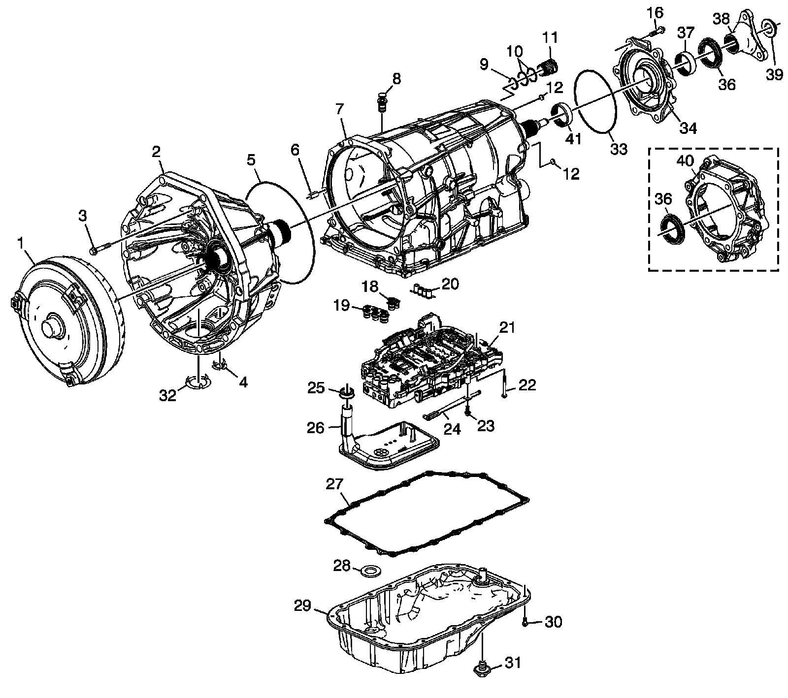
1 - Torque Converter Assembly
2 - Torque Converter (with Fluid Pump) Housing Assembly - Model Dependent
3 - Bolt, M10 x 50 mm
4 - Torque Converter Housing Access Hole Cover - Model Dependent
5 - A/Trans Fluid Pump Seal
6 - Torque Converter Housing Locator Pin
7 - A/Trans Case Assembly
8 - Trans Fluid Fill Tube Plug Assembly
9 - A/Trans Connector Seal
10 - A/Trans Connector (O-ring) Seal
11 - A/Trans Electrical Connector Passage Sleeve
12 - A/Trans Case Plug
16 - Bolt, M10 x 40 mm - Model Dependent
18 - A/Trans Fluid Pump Seal Assembly
19 - A/Trans Fluid Pump Seal Assembly
20 - Center Support Fluid Passage Seal Assembly
21 - Control (with Body and Valve) Valve Assembly
22 - Bolt, M5 x 73 mm
23 - Bolt, M6 x 14.5 mm
24 - Manual Shaft Detent Assembly
25 - A/Trans Fluid Filter Seal Assembly
26 - A/Trans Fluid Filter Assembly
27 - A/Trans Fluid Pan Gasket
28 - A/Trans Fluid Pan Magnet
29 - A/Trans Fluid Pan Assembly
30 - Bolt, M6 x 20 mm
31 - Trans Oil Level Check Plug
32 - Torque Converter Housing Access Hole Cover
33 - A/Trans Case Extension Seal - 2WD Models Only
34 - A/Trans Case Extension - 2WD Models Only
36 - Output Shaft Seal Assembly
37 - Output Shaft Bearing Assembly - 2WD Models Only
38 - Prop Shaft Trans Flange - 2WD Models Only
39 - Front Prop Shaft Flange Nut - 2WD Models Only
40 - A/Trans Case Extension - AWD Models Only
41 - Output Shaft Bearing Assembly - Case
Clutch Assemblies and Associated Parts
Clutch Assemblies And Associated Parts:
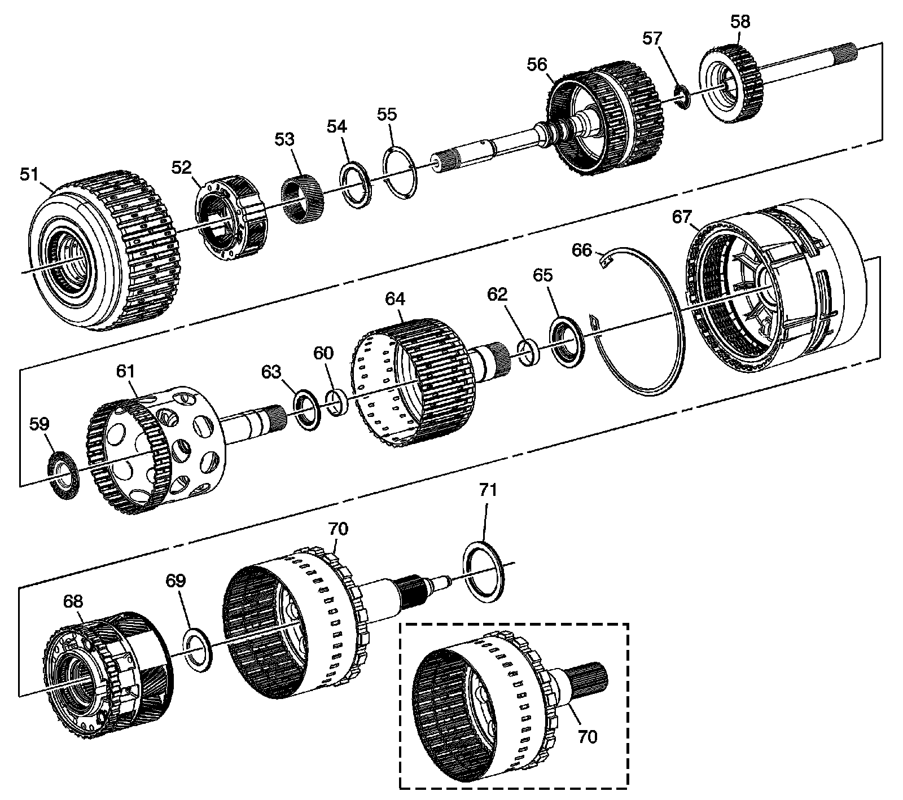
51 - 1-2-3-4 and 3-5 Reverse Clutch Assembly
52 - Input Carrier Assembly
53 - Input Sun Gear
54 - Input Sun Gear Thrust Bearing
55 - Input Sun Gear Thrust Washer
56 - 4-5-6 (w/ Turbine Shaft) Clutch Assembly
57 - Turbine Shaft Thrust Bearing Assembly
58 - 4-5-6 Clutch (w/ Output Carrier Shaft and Dampener) Hub Assembly
59 - 4-5-6 Clutch Hub Thrust Bearing Assembly
60 - Output Carrier Inner Sun Gear Shaft (Front) Bushing
61 - 1-2-3-4 Clutch (w/ Output Carrier Inner Sun Gear Shaft) Hub Assembly
62 - Output Carrier Inner Sun Gear Shaft Bushing
63 - 1-2-3-4 Clutch Hub Thrust Bearing Assembly
64 - 2-6 and 3-5 Reverse Clutch (w/ Output Carrier Outer Sun Gear Shaft) Hub Assembly
65 - 2-6 and 3-5 Reverse Clutch Hub Thrust Bearing Assembly
66 - Center Support Retaining Ring
67 - Center (w/ 2-6 Low and Reverse Clutch) Support Assembly
68 - Output Carrier Assembly
69 - Output Carrier Thrust Bearing Assembly
70 - Output Shaft Assembly - Model Dependent
71 - Output Shaft Thrust Bearing Assembly
Torque Converter (w/Fluid Pump) Housing Assembly
Torque Converter (w/Fluid Pump) Housing Assembly:
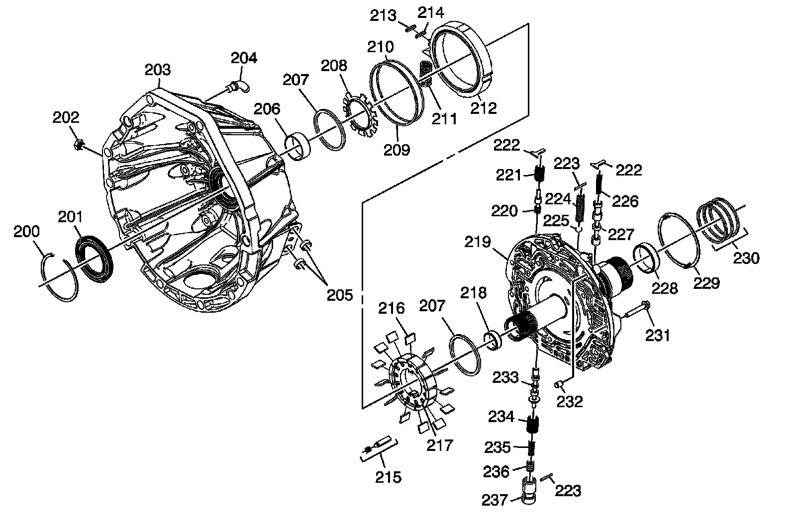
200 - Torque Converter Fluid Seal Retaining Ring
201 - Torque Converter Fluid Seal Assembly
202 - Line Pressure Test Hole Plug
203 - Torque Converter Housing - Model Dependent
204 - A/Trans Vent Pipe
205 - Trans Fluid Cooler Pipe Fitting Seal
206 - Torque Converter Bushing
207 - A/Trans Fluid Pump Vane Ring
208 - A/Trans Fluid Pump Rotor Guide
209 - A/Trans Fluid Pump Slide Fluid Seal Ring
210 - A/Trans Fluid Pump Slide (O-ring) Seal
211 - A/Trans Fluid Pump Slide Outer Spring
212 - A/Trans Fluid Pump Slide
213 - A/Trans Fluid Pump Slide Seal
214 - A/Trans Fluid Pump Slide Seal Support
215 - A/Trans Fluid Pump Slide Pivot Pin
216 - A/Trans Fluid Pump Vane
217 - A/Trans Fluid Pump Rotor
218 - Turbine Shaft Front Bushing
219 - A/Trans Fluid Pump Cover Assembly
220 - Converter Feed Limit Valve
221 - Converter Feed Limit Valve Spring
222 - Valve Spring Retainer
223 - Pressure Relief Ball Valve Spring Pin
224 - Pressure Relief Ball Valve Spring
225 - Pressure Relief Ball Valve
226 - TCC Control Valve Spring
227 - TCC Control Valve
228 - Turbine Shaft Rear Bushing
229 - 1-2-3-4 and 3-5 Reverse Clutch Housing Thrust Washer
230 - 1-2-3-4 and 3-5 Reverse Clutch Fluid Seal Ring
231 - Bolt, M6 x 40 mm
232 - A/Trans Fluid Pump Locator Pin
233 - Pressure Regulator Valve
234 - Pressure Regulator Valve Outer Spring
235 - Pressure Regulator Valve Inner Spring
236 - Isolator Valve
237 - Isolator Valve Sleeve
Control (with Body and Valve) Valve Assembly
Control (with Body and Valve) Valve Assembly:
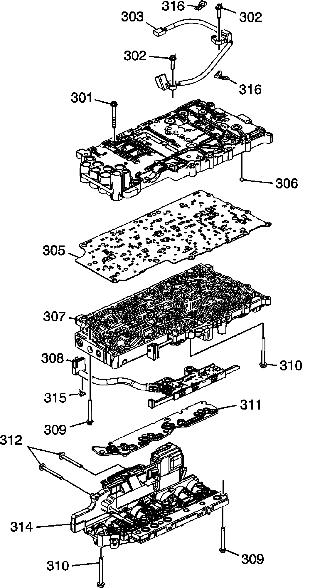
301 - Bolt, M5 x 36 mm
302 - Bolt, M6 x 20 mm
303 - A/Trans Input and Output Speed Sensor Assembly
304 - Control Valve Upper Body Assembly
305 - Control Valve Body Spacer (w/ Gasket) Plate Assembly
306 - Control Valve Body Ball Check Valve
307 - Control Valve Lower Body Assembly
308 - A/Trans Manual Shift Shaft Position Switch Assembly
309 - Bolt, M5 x 45 mm
310 - Bolt, M5 x 55 mm
311 - Filter Plate Assembly
312 - Bolt, M5 x 53 mm
314 - Control Solenoid (w/ Body and TCM) Valve Assembly
315 - A/Trans Manual Shaft Position Switch Wiring Harness Clip
316 - A/Trans Input and Output Speed Sensor Wiring Harness Clip
Upper Control Valve Body Assembly
Upper Control Valve Body Assembly:
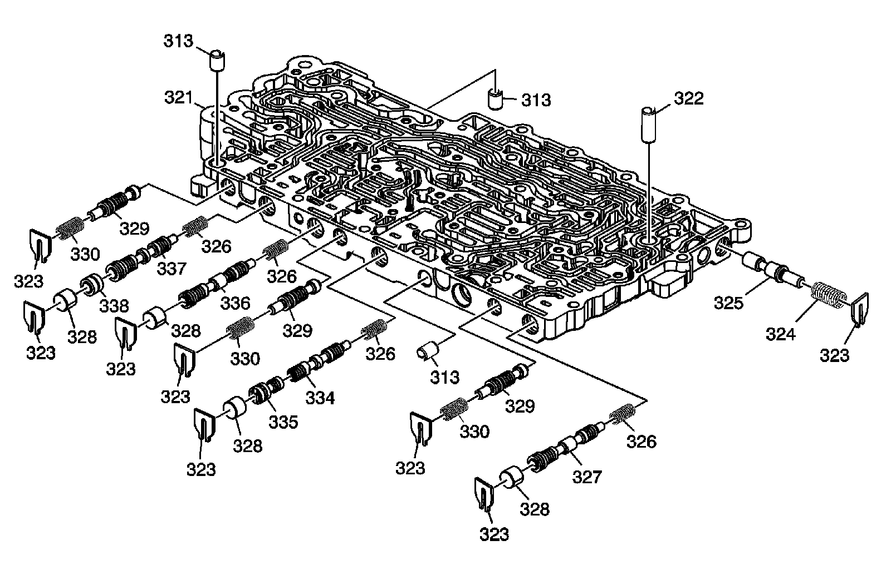
313 - Control Valve Body Locator Pin
321 - Control Valve Upper Body
322 - Control Valve Body Locator Pin
323 - Retainer
324 - Actuator Feed Limit Valve Spring
325 - Actuator Feed Limit Valve
326 - Clutch Regulator Valve Spring
327 - CBR1/4-5-6 Clutch Regulator Valve
328 - Clutch Regulator Valve Bore Plug
329 - Clutch Boost Valve
330 - Clutch Boost Valve Spring
334 - 2-6 Clutch Regulator Valve
335 - 2-6 Clutch Regulator Valve Gain Valve
336 - 3-5 Reverse Clutch Regulator Valve
337 - 1-2-3-4 Clutch Regulator Valve
338 - Shuttle Valve
Lower Control Valve Body Assembly
Lower Control Valve Body Assembly:
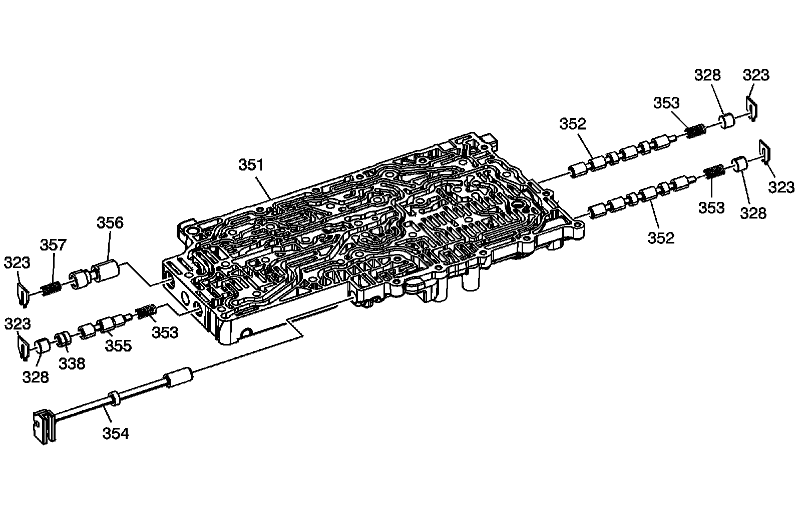
323 - Retainer
328 - Clutch Regulator Valve Bore Plug
338 - Shuttle Valve
351 - Control Valve Lower Body
352 - Clutch Select Solenoid Valve
353 - Clutch Select Solenoid Valve Spring
354 - Manual Valve
355 - TCC Regulator Apply Valve
356 - Clutch Piston Dam Feed Regulator Valve
357 - Clutch Piston Dam Feed Regulator Valve Spring
1-2-3-4 and 3-5 Reverse Clutch Assembly
1-2-3-4 and 3-5 Reverse Clutch Assembly:
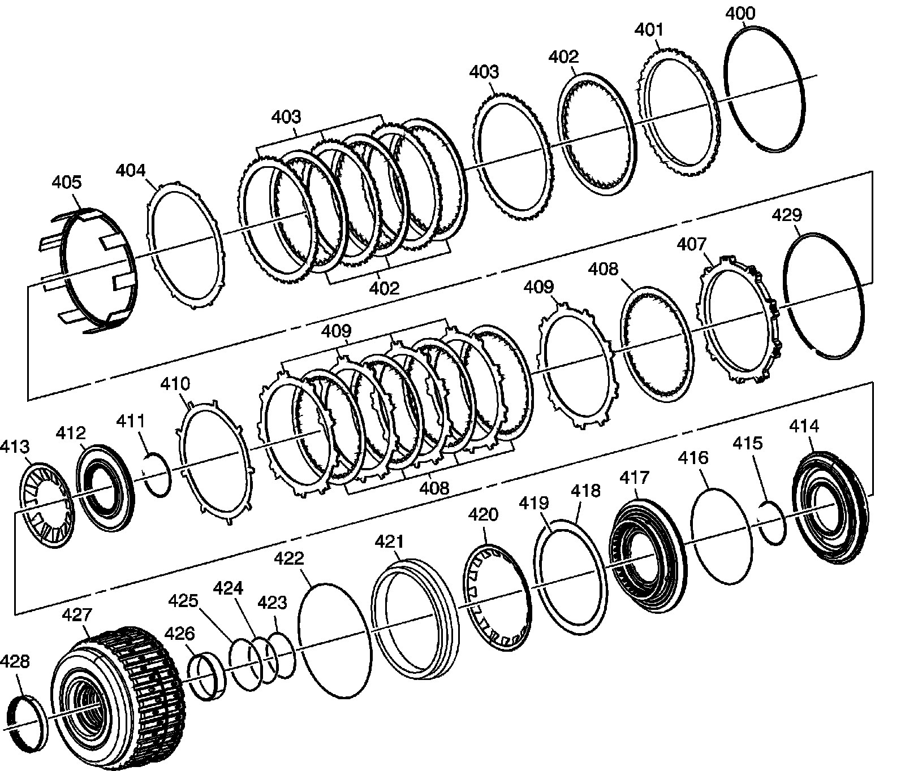
400 - 3-5 Reverse Clutch Backing Plate Retaining Ring
401 - 3-5 Reverse Clutch Backing Plate
402 - 3-5 Reverse Clutch Plate Assembly
403 - 3-5 Reverse Clutch Plate
404 - 3-5 Reverse Clutch (Waved) Plate
405 - 3-5 Reverse Clutch Apply Ring
407 - 1-2-3-4 Clutch Backing Plate
408 - 1-2-3-4 Clutch Plate Assembly
409 - 1-2-3-4 Clutch Plate
410 - 1-2-3-4 Clutch (Waved) Plate
411 - 1-2-3-4 Clutch Piston Dam Retaining Ring
412 - 1-2-3-4 Clutch Piston Dam Assembly
413 - 1-2-3-4 Clutch Spring
414 - 1-2-3-4 Clutch Piston
415 - 1-2-3-4 Clutch Piston Housing Retaining Ring
416 - 1-2-3-4 Clutch Piston Seal
417 - 1-2-3-4 Clutch Piston Housing
418 - 3-5 Reverse Clutch Piston Dam (O-ring) Seal
419 - 3-5 Reverse Clutch Piston Inner Seal
420 - 3-5 Reverse Clutch Spring
421 - 3-5 Reverse Clutch Piston
422 - 3-5 Reverse Clutch Piston Outer Seal
423 - 1-2-3-4 Clutch Piston Inner Seal
424 - 1-2-3-4 Clutch Piston Housing Seal
425 - 1-2-3-4 Clutch Piston Housing Seal
426 - 1-2-3-4 and 3-5 Reverse Clutch Housing Rear Bushing
427 - 1-2-3-4 and 3-5 Reverse Clutch Housing Assembly
428 - 1-2-3-4 and 3-5 Reverse Clutch Bearing Assembly
429 - 1-2-3-4 Clutch Backing Plate Retaining Ring
4-5-6 (w/Turbine Shaft) Clutch Assembly
4-5-6 (w/Turbine Shaft) Clutch Assembly:
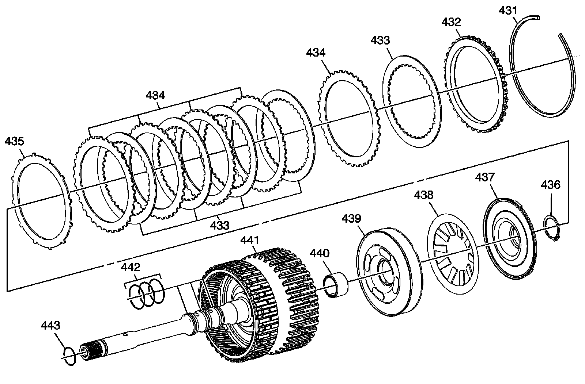
431 - 4-5-6 Clutch Backing Plate Retaining Ring
432 - 4-5-6 Clutch Backing Plate
433 - 4-5-6 Clutch Plate Assembly
434 - 4-5-6 Clutch Plate
435 - 4-5-6 Clutch (Waved) Plate
436 - 4-5-6 Clutch Piston Dam Retaining Ring
437 - 4-5-6 Clutch Piston Dam Assembly
438 - 4-5-6 Clutch Spring
439 - 4-5-6 Clutch Piston Assembly
440 - Output Carrier Shaft Housing Bushing
441 - 4-5-6 (w/Turbine Shaft) Housing Assembly
442 - Turbine Shaft Fluid Seal Ring
443 - Turbine Shaft (O-ring) Seal
2-6 Clutch Assembly
2-6 Clutch Assembly:
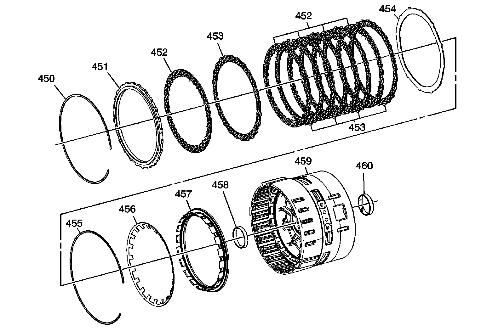
450 - 2-6 Clutch Backing Plate Retaining Ring
451 - 2-6 Clutch Backing Plate
452 - 2-6 Clutch Plate Assembly
453 - 2-6 Clutch Plate
454 - 2-6 Clutch (Waved) Plate
455 - 2-6 Clutch Spring Retaining Ring
456 - 2-6 Clutch Spring
457 - 2-6 Clutch Piston Assembly
458 - Output Carrier Outer Sun Gear Shaft (Front) Bushing
459 - Center Support Assembly
460 - Output Carrier Outer Sun Gear Shaft Rear Bushing
Low and Reverse Clutch Assembly
Low And Reverse Clutch Assembly:
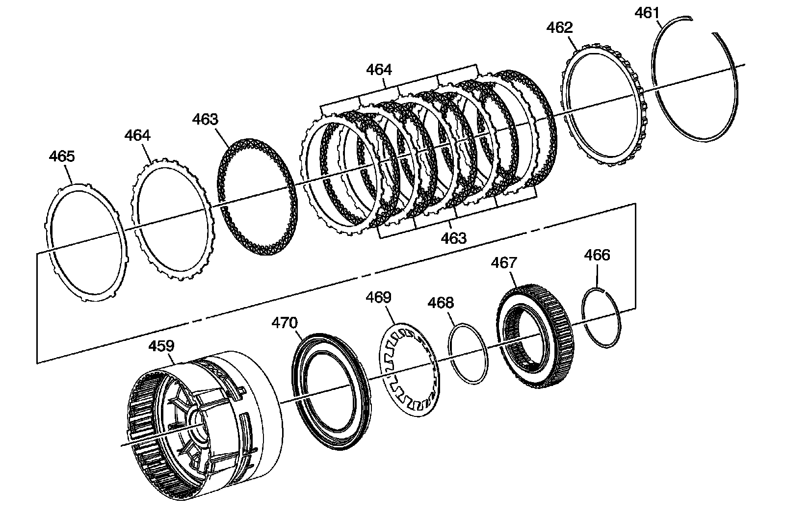
459 - Center Support Assembly
461 - Low and Reverse Clutch Backing Plate Retaining Ring
462 - Low and Reverse Clutch Backing Plate
463 - Low and Reverse Clutch Plate Assembly
464 - Low and Reverse Clutch Plate
465 - Low and Reverse Clutch (Waved) Plate
466 - Low and Reverse Clutch Spring Retaining Ring
467 - Low Clutch Sprag Assembly
468 - Low Clutch Sprag Seal
469 - Low and Reverse Clutch Spring
470 - Low and Reverse Clutch Piston Assembly
4-5-6 Clutch Hub Assembly
4-5-6 Clutch Hub Assembly:
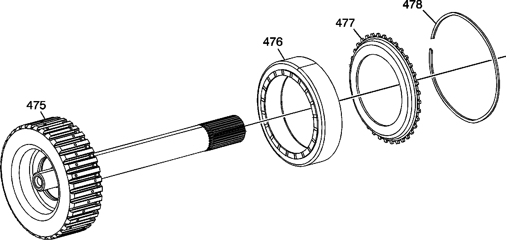
475 - 4-5-6 Clutch (w/ Output Carrier Shaft) Hub Assembly
476 - 4-5-6 Clutch Dampener
477 - 4-5-6 Clutch Dampener Apply Plate
478 - 4-5-6 Clutch Dampener Retaining Ring
Output Carrier Assembly
Output Carrier Assembly:
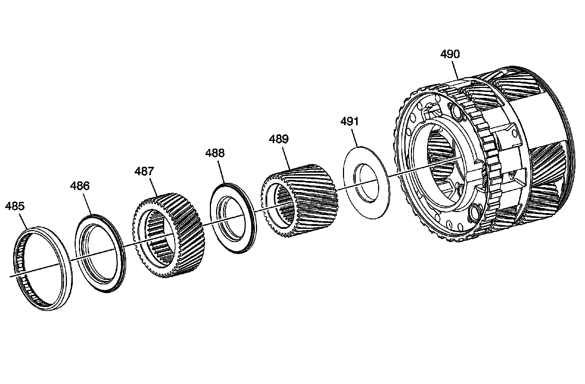
485 - Center Support Roller Bearing Assembly
486 - Output Carrier Front Sun Gear Thrust Bearing Assembly
487 - Output Carrier Front Sun Gear
488 - Output Carrier Front Sun Gear Rear Thrust Bearing Assembly
489 - Output Carrier Rear Sun Gear
490 - Output Carrier
491 - Output Carrier Rear Sun Gear Thrust Bearing Assembly - Captured
Output Shaft Assembly
Output Shaft Assembly:
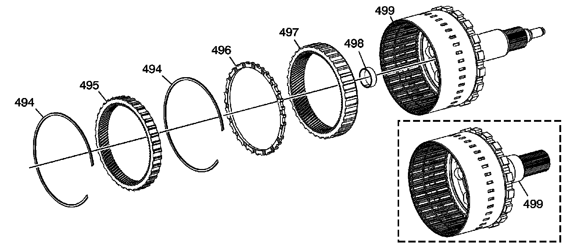
494 - Output Carrier Internal Gear Retaining Ring
495 - Output Carrier Internal Front Gear
496 - Output Carrier Internal Gear Spacer
497 - Output Carrier Internal Rear Gear
498 - Output Carrier Bushing
499 - Output Shaft Assembly - Model Dependent
Park System Components
Park System Components:
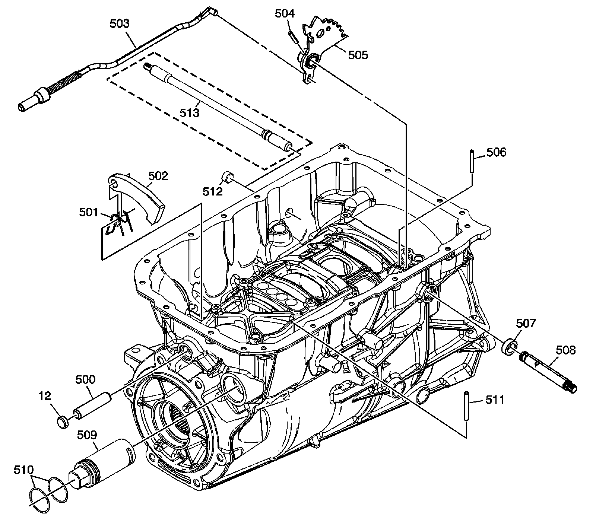
12 - A/Trans Case Plug
500 - Park Pawl Shaft
501 - Park Pawl Spring
502 - Park Pawl
503 - Park Pawl Actuator Assembly
504 - Manual Shaft Detent Lever Hub Pin
505 - Manual Shaft Detent Lever Assembly
506 - Manual Shift Shaft Pin
507 - Manual Shift Shaft Seal
508 - Manual Shift Shaft - AWD Models Only
509 - Park Pawl Actuator Guide
510 - Park Pawl Actuator Guide (O-ring) Seal
511 - Park Pawl Actuator Guide Pin
512 - Park Pawl Shaft Hole Plug
513 - Manual Shift Shaft - 2WD Models Only